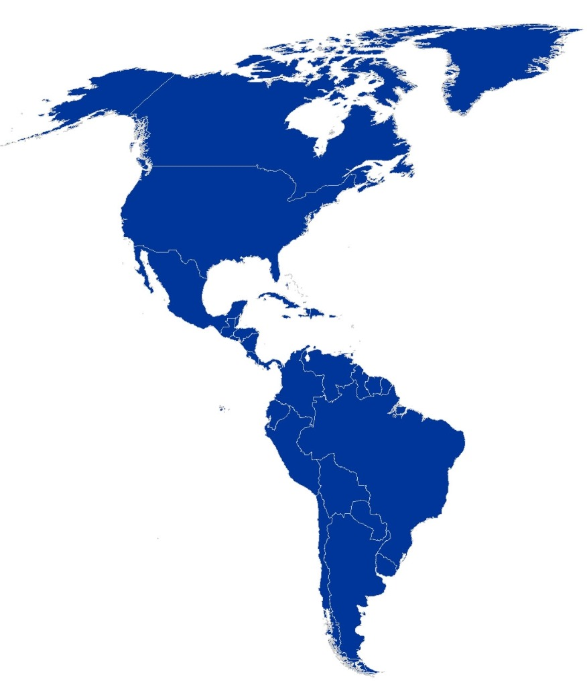

💨 Escáner Físico Protobject
Protobject Enlazado

📐 Encuadra el mapa físico dentro del marco celeste
🏷️ Países
👁️ Ver Visión
🎯 Calibrar 🔴
🎯 Calibrar 🟢
Silueta:
👉 Toca la ficha en la pantalla para memorizar su color exacto
🔴 Ficha 1 (Turbina 1)
Buscando...
— No detectada —
Coloca la ficha roja en el mapa
🟢 Ficha 2 (Turbina 2)
Buscando...
— No detectada —
Coloca la ficha verde en el mapa